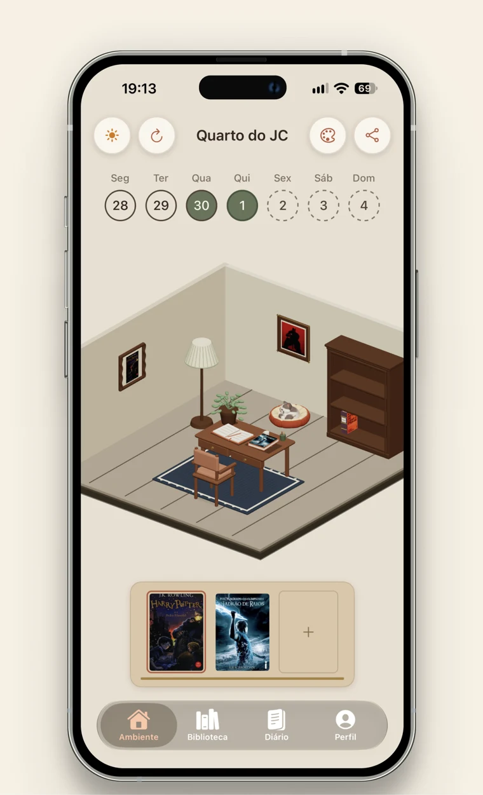
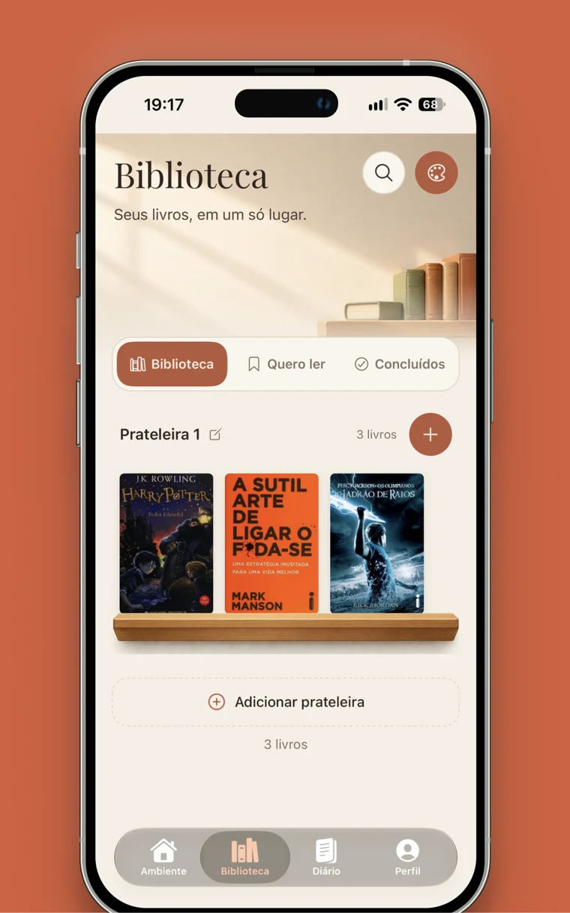
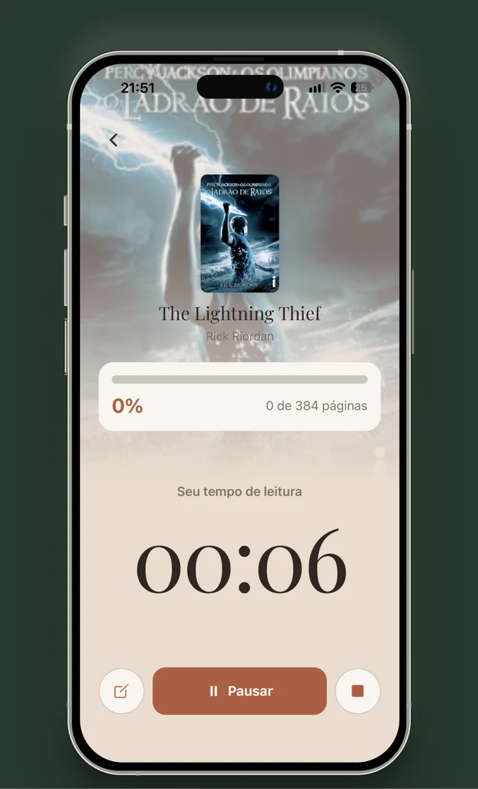
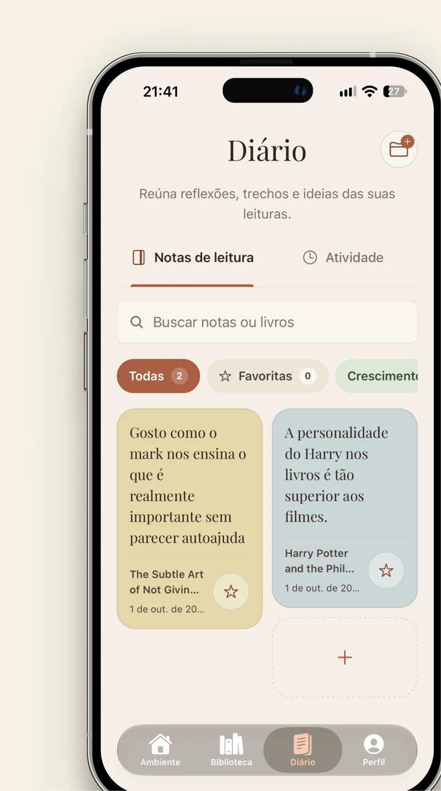

Dia ou noite
Um ambiente para cada momento da sua leitura.
Nookly: Sua biblioteca pessoal é um aplicativo para organizar livros, acompanhar o progresso de leitura, registrar notas e personalizar uma sala virtual.
Quero conhecer o NooklyEm beta para iPhone, pelo TestFlight.

Seu novo companheiroO próximo livro. A página onde você parou. Aquela ideia que vale guardar. No Nookly, tudo encontra seu lugar.

Reúna os livros que quer ler, os que estão te acompanhando e os que já deixaram saudade. Crie suas estantes e encontre sua próxima leitura.
Reserve um momento para ler. Registre suas páginas, acompanhe seu progresso e use o cronômetro para dar espaço à leitura no seu dia.
Pequenos momentos também fazem uma boa história.


Guarde pensamentos, trechos e descobertas no seu diário. Organize suas notas por livro e favorite o que você quer revisitar.
Para lembrar do que ficou em você.
Escolha móveis, mude a decoração, acrescente suas fotos e encontre a atmosfera que combina com você. Uma sala virtual para chamar de sua.
Um ambiente para cada momento da sua leitura.
Combine objetos e organize cada detalhe do espaço.
Suas fotos também têm lugar nesse refúgio.
O Nookly organiza sua biblioteca e acompanha suas leituras. Ele não fornece ebooks nem substitui o livro físico ou o aplicativo em que você lê.
Você pode usar o app sem conta, com os dados no aparelho. Para sincronizar sua biblioteca e seu perfil, entre com Google ou, no iOS, com Apple. O login com Google usa seu identificador, email e perfil básico para autenticar sua conta. Consulte os detalhes de armazenamento, análise de uso e exclusão na Política de Privacidade.
A versão atual não oferece compras dentro do app nem assinaturas.
Inscreva seu email na lista abaixo. Os convites são enviados para testar o Nookly no iPhone pelo TestFlight, aplicativo da Apple. O beta pode ter ajustes e falhas durante o desenvolvimento.
Entre na lista e receba seu convite para experimentar o Nookly no iPhone.
Uma primeira turma de até 200 leitores.
Seu email será usado para o convite e as comunicações do beta. Saiba mais na Política de Privacidade.